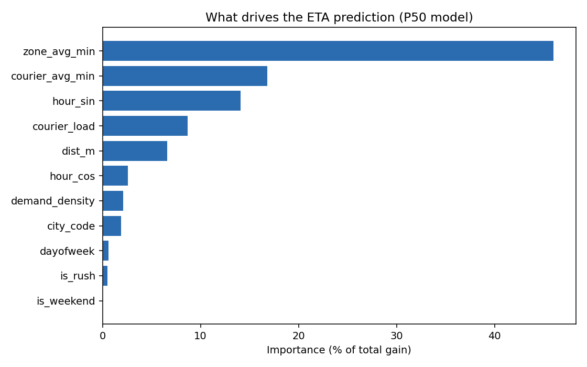
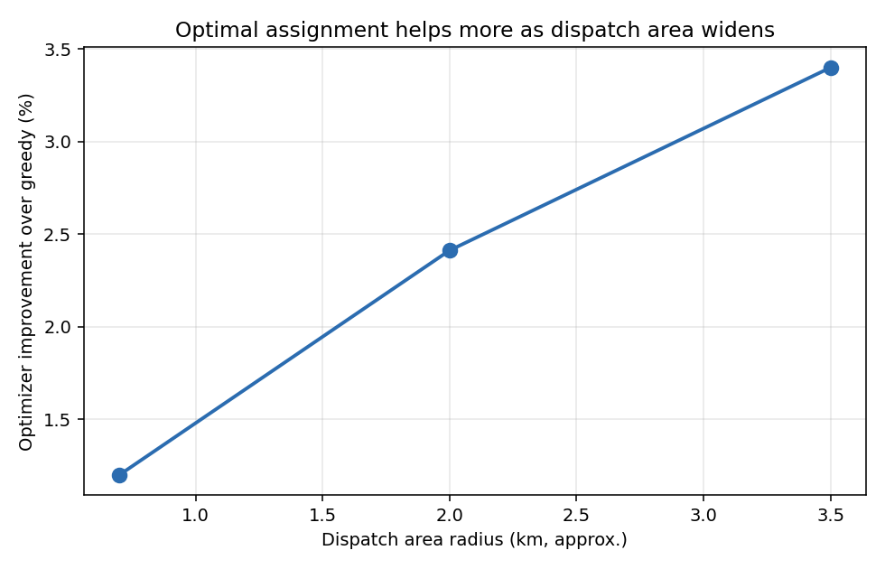
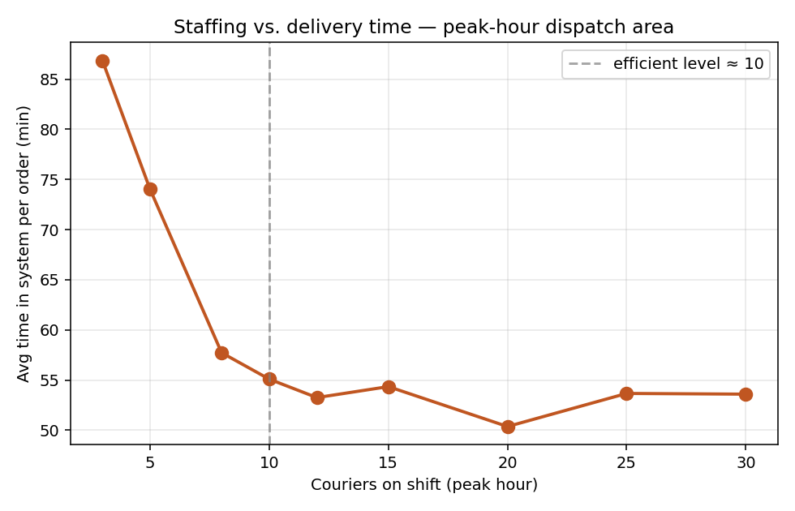

01
Ingest & Clean
complete
02
Quantile ETA
complete
03
Assignment
complete
04
Simulation
complete
05
Dashboard
you're here
01
Clean geospatial foundation
445K RECORDSClean retention
94.3%
after removing implausible durations from 472K raw
Metric zones
8,395
~53 orders each, binned in native meters
Delivery time spread
29–229min
P10 to P90 — wide spread motivates quantile prediction
Coordinate insight: LaDe positions are a projected
metric grid, not GPS degrees — so zones are binned in native meters,
needing no datum assumptions and yielding correct distances.
02
Calibrated quantile ETA model
WELL-CALIBRATEDMedian error (MAE)
44.7min
32% better than mean baseline
P90 coverage
88.9%
of deliveries fall within predicted P90 (target 90%)
Top signal
63%
of predictive gain from zone + courier history features

Leakage-free by construction: courier and zone
historical averages are computed on the training split only, then mapped
onto test — so the 44.7-min result is trustworthy, not inflated.
03
Assignment optimization
HUNGARIAN vs GREEDYMethod
Optimal
provably-optimal assignment vs greedy nearest-first
Gain @ 3.5 km radius
3.4%
less total cost — triples as dispatch area widens

Finding: optimization pays off most when courier
supply is geographically dispersed. Tightly clustered couriers are already
near-optimal under greedy — so the real lever lies in staffing, not assignment.
04
Peak-hour staffing simulation
DISCRETE-EVENTUnderstaffed (3 couriers)
87min
average time per order at the peak-hour hotspot
Efficient (10 couriers)
55min
a 37% cut — beyond this, negligible benefit
Efficient level
≈10
couriers, located automatically at the curve's elbow

Calibrated on real data: arrival rate and delivery-time
distribution come from LaDe's busiest peak-hour area; the queue outcomes are
simulated. Standard operations-research method — real data, modelled scenarios.